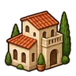
Улица за улицей
Проложите дорогу — вдоль неё встанут дома. Когда семье хватает еды, лавок и красоты вокруг, дом становится счастливым — надстройте ему этаж, и в нём поселится новая семья.
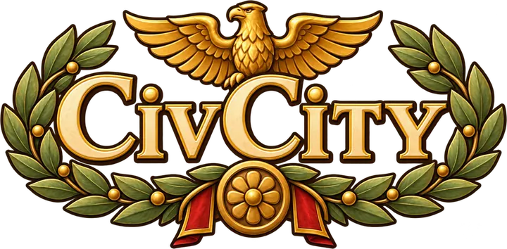
Проложите первую улицу — и смотрите, как маленькая стоянка становится Вечным городом. Дома растут этажами, жители спешат на рынок, а легион уходит в походы за славой.
Бесплатно · Установщик — около 100 МБ · Windows 10 и 11 · вход по почте, город хранится в облаке
CivCity — игра для компьютера с Windows. Откройте civcity.ru на компьютере, чтобы скачать её.
Об игре
CivCity — спокойный градостроитель в духе Town to City, перенесённый в Древний Рим. Здесь нет поражений и спешки: вы строите, украшаете и любуетесь, а город отвечает вам жизнью.

Проложите дорогу — вдоль неё встанут дома. Когда семье хватает еды, лавок и красоты вокруг, дом становится счастливым — надстройте ему этаж, и в нём поселится новая семья.
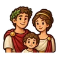
Каждый куда-то спешит: на рынок, в термы, домой к ужину. Повозка привозит новые семьи через арку, дети гладят кошек, а к ночи в окнах зажигается свет.
Постройте казармы, соберите отряд из пяти родов войск и ведите его через восемь провинций. Бой идёт сам — вы смотрите сражение и вовремя отдаёте приказы.
Вход по почте и паролю. Город сам сохраняется на сервере, пока вы играете, — продолжайте с любого компьютера, просто войдите в тот же аккаунт.
Простые римляне. Им нужна еда — и немного красоты за окном.
Дом с мастерской внизу. Хотят еды, одежды и развлечений.
Домус с портиком и садом. Платят много, но хотят всего и лучшего.
Живой город
Всё снято прямо в игре: утро на рынке, сады вилл, утки в парковом пруду и огни ночного форума.


Сцены оживают сами, когда вы до них долистываете. Щелчок по сцене — пауза.
Легион
Когда город подрастёт, изучите «Легион» и постройте казармы. Слава побед вернётся в город чудесами света.
Соберите отряд и ведите его по тропе провинции: бой за боем, до логова босса. Битва идёт сама — вы смотрите сражение и вовремя применяете умения. Победы приносят денарии и Славу, побеждённый босс открывает новое место в отряде и следующую провинцию.
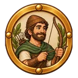
Лучники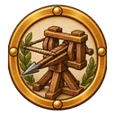
Баллисты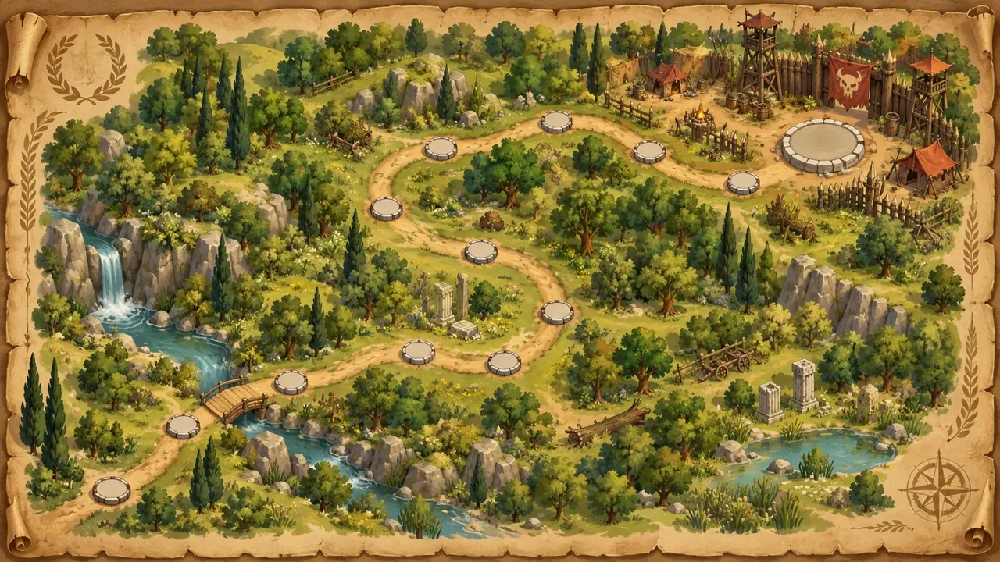
Слава и победы открывают великие постройки: одни встают прямо в вашем городе, другие возводятся в провинции и дают бонусы армии и жителям.
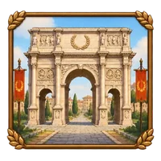
Триумфальная арка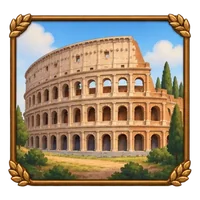
Амфитеатр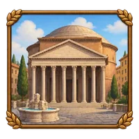
Пантеон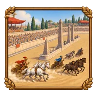
Большой цирк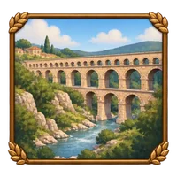
Акведук Клавдия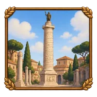
Колонна Траяна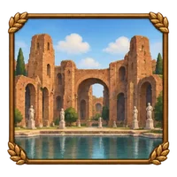
Термы Каракаллы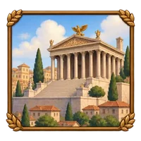
Храм ЮпитераТрейлер

Версия 1.0 для Windows
| Что | Минимум | Рекомендуется |
|---|---|---|
| Система | Windows 10, 64-бит | Windows 11 |
| Процессор | 4 ядра, 2,5 ГГц | 6 ядер, 3 ГГц |
| Память | 8 ГБ | 16 ГБ |
| Видеокарта | С поддержкой Vulkan или DirectX 12, 2 ГБ (GeForce GTX 960, Radeon RX 560) | GeForce GTX 1660, Radeon RX 5600 или новее |
| Место | 1 ГБ на диске | |
| Интернет | Нужен для входа и облачных сохранений | |
Игра рисует через Vulkan, а если он недоступен — через DirectX 12. Если игра не запускается, обновите драйвер видеокарты. Качество графики можно снизить в настройках игры.
Новости
CivCity полностью переделана: новый движок и новая графика — уютный римский город с живыми горожанами. Вход прежний, город хранится в облаке — играйте с любого компьютера.
В первый раз лаунчер скачает игру — около 250 МБ, оборванная загрузка продолжается с того же места. Дальше скачиваются только изменившиеся файлы, обычно меньше мегабайта.
Все обновления по порядку →
Новости, планы и ответы на вопросы — в нашем Telegram-канале Leonov Labs.
Аккаунт создаётся в программе при первом запуске: почта и пароль. Город сохраняется на сервере сам — садитесь за любой компьютер, входите в тот же аккаунт и продолжайте с того места, где остановились.
Пока нет — CivCity работает на компьютерах с Windows 10 и 11.
Чтобы город не потерялся: он хранится на сервере, и его можно продолжить на другом компьютере. Сервер хранит и несколько прежних сохранений вашего города.
Вход прежний: те же почта и пароль. Новая игра начинается с нового города, а старый браузерный город остаётся в облаке.
Только то, что нужно для игры: почту и ваш город. Сам пароль мы не храним — только его «отпечаток», по которому пароль не узнать. Подробно — в политике конфиденциальности.
Загляните в папку «Спам» и проверьте адрес почты. Ссылка в письме действует час; новое письмо можно запросить на странице аккаунта.